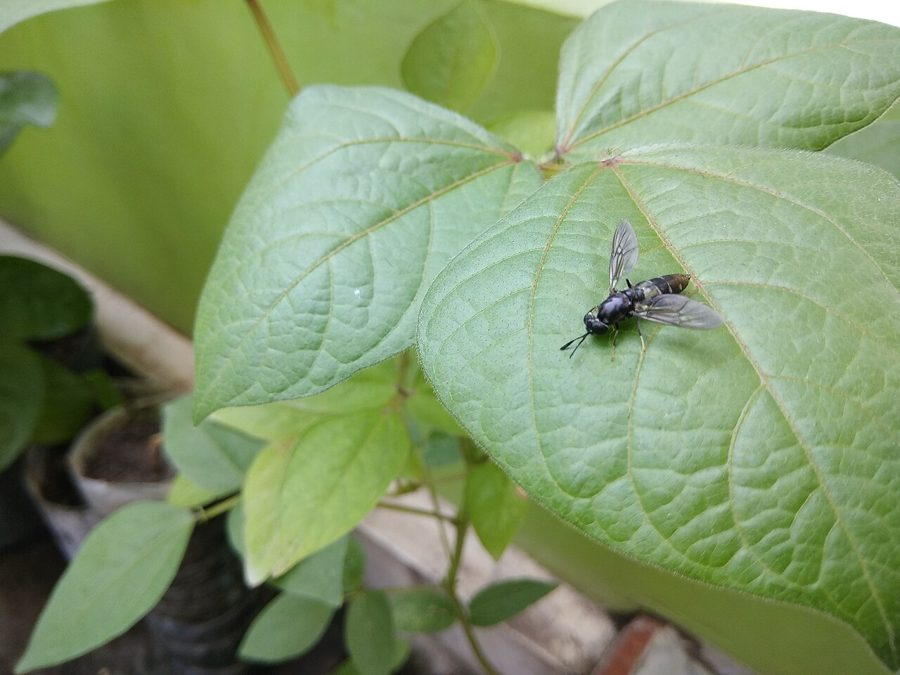

काली सिपाही मक्खीBlack Soldier Fly
Hermetia illucens · Stratiomyidae · INS-0069

- Scientific name
- Hermetia illucens (Linnaeus, 1758)
- Family
- Stratiomyidae
- Hindi
- काली सिपाही मक्खी
- Local names
- black soldier fly, soldier fly, kali sipahi makkhi, bsf
- Status here
- naturalized
- IUCN
- not evaluated
- Review
- audited and independently read
When to look कब देखें
Expected mainly in April, May, June, July, August, September, October.
Uses and possibilities उपयोग और संभावनाएँ
Drawn from the documented uses in the profile below, where each is labelled traditional, current or a research lead. All uses →
काली सिपाही मक्खी / Black Soldier Fly
Hermetia illucens (Linnaeus, 1758) — Stratiomyidae
काली सिपाही मक्खी — अमेरिका से आई हुई एक काली मक्खी जो पिछले दो दशकों में भारत में फैल गई है। इसका लार्वा (अरवा) गोबर, गीली खाद, घरेलू कचरे को तेजी से खा सकता है और उसे उपयोगी खाद में बदल देता है। यह लार्वा पोषक तत्वों से भरपूर होता है और इसे जानवरों का सस्ता मुंगरी भी बनाया जा सकता है। विकसित देशों में अब इसका पालन करके खाद और सूखा चारा बनाया जाता है। भारत के गाँवों में यह अभी नया है, लेकिन बस्ती में इसका इस्तेमाल करने के लिए सीखना एक संभावित अनुसंधान है।
Quick Identification त्वरित पहचान
| Feature | Description |
|---|---|
| Size | Medium fly, body length 15-20 mm |
| Colour | Adults predominantly black or dark grey with a metallic sheen |
| Head | Reddish-brown or amber coloured |
| Wings | Clear, held roof-like over the back at rest; one pair (true flies) |
| Behaviour | Adults often seen in pairs during mating; do not feed; short-lived (2-3 days) |
| Larva | Pale cream to tan, cylindrical, segmented, up to 25 mm long; can be seen in compost piles |
Field tip: A black fly with an amber or reddish head, often seen in pairs around compost heaps or manure piles. The short-lived adults do not feed or cause disease. The larvae are the useful stage, visible as pale worm-like creatures rapidly consuming organic waste.
हिंदी — कैसे पहचानें: काली मक्खी, सिर लाल-सुनहरा। गोबर के ढेर पर अरवा (लार्वा) क्रीम रंग के, लंबे होते हैं।
Morphology आकारिकी
Biometrics (typical measurements):
| Measurement | Range |
|---|---|
| Adult body length | 15-20 mm |
| Larva length (mature) | 20-25 mm |
| Larva width | 3-4 mm |
Adult fly:
- Head: Reddish-brown to amber, with two large compound eyes.
- Thorax: Black or dark grey, somewhat flattened dorsoventrally, with a metallic sheen.
- Abdomen: Black or dark grey, slightly flattened, with visible segmentation.
- Wings: One pair (like all true Diptera), clear, membranous, held roof-like at rest. Second pair vestigial (halteres).
- Legs: Black, relatively long for the body size.
- Mouthparts: Reduced (non-feeding); no proboscis or chewing parts.
Larva (maggot):
- Body: Cylindrical, elongated, whitish-cream to pale tan colour.
- Segmentation: Clearly segmented (13 body segments plus head).
- Head: Small, dark, with powerful mandibles for grinding organic matter.
- Breathing: Two posterior spiracles (breathing holes) at the rear end.
- Integument: Smooth, slightly flattened dorsoventrally.
- Locomotion: Crawling via body peristalsis; typically head-down in substrate.
Sexual dimorphism: Males are slightly smaller; females are larger and have visible ovipositor at the tail.
Life Cycle / Phenology जीवन चक्र
| Stage / Month | Event |
|---|---|
| April–October | Main breeding season; multiple generations |
| Oviposition | Female deposits 400-800 eggs in moist crevices within or near organic matter |
| Egg | Tiny, elongated; hatch within 3-5 days |
| Larval stage | Feeding and growth for 15-20 days in optimal conditions (warm, wet, rich substrate); larvae can reach 25 mm and weigh up to 200 mg |
| Pre-pupation | Larva migrates out of substrate to find dry pupation site; can travel 10-20 cm |
| Pupation | Forms puparium; pupal stage lasts 8-15 days |
| Adult emergence | Adults emerge, mate briefly, lay eggs; total adult lifespan 2-3 days |
| November–March | Dormancy; some puparia overwinter; minimal activity |
हिंदी: गर्मी में तीन हफ्तों में एक पीढ़ी। अंडे नम गोबर में; लार्वा 15 दिन में बड़ा हो जाता है; कीड़े सूखी जगह की तलाश करते हैं; नई मक्खियाँ तीन दिन में निकल आती हैं।
Host Plants or Prey आहार
Larval diet (decomposing substrate):
- Animal manure: cattle, poultry, and other livestock excreta
- Food waste and kitchen scraps
- Compost heaps with organic matter
- Vegetable and fruit residues
- Decaying plant material
Substrate requirements:
- High moisture (60-80% substrate moisture optimal)
- Rich organic content (high carbon and nitrogen)
- Moderate temperature (25-35°C optimal)
Adult food sources:
- Do not feed; adults rely entirely on larval energy reserves
- Males gather near breeding sites, females near egg-laying sites
Predators / Natural Enemies शत्रु
- Birds: Ground-feeding birds (mynas, crows) may eat larvae or pupae when exposed.
- Spiders: Hunting spiders may catch adults.
- Parasitoid flies: Small parasitoid flies may lay eggs on larvae.
- Predatory beetles: Ground beetles and other beetles may consume larvae.
Agricultural / Human Relevance कृषि प्रासंगिकता
Waste processing and circular economy potential.
Today (current practice elsewhere): In developed countries and middle-income countries (Brazil, Ghana, Kenya, parts of India), Black Soldier Fly larvae are farmed at scale for:
- Organic waste conversion: Commercial facilities process 10-100 tonnes of organic waste per day using BSF larvae.
- Animal feed production: Dried larvae are sold as high-protein livestock and aquaculture feed, with 40-50% crude protein content.
- Fertiliser production: Frass (larval excrement) is a nutrient-rich soil amendment.
Scale of commercial use: Global production is estimated in thousands of tonnes annually; companies in India (Delhi, Bangalore) operate small-scale BSF facilities processing 100-500 kg per day.
Research direction for Basti (a lead, not a result): Piloting a small-scale BSF composting system in Basti with village-level waste input (household food waste, animal manure) at a scale of 50-200 kg per day would test whether locally-adapted rearing protocols, temperature management, and harvesting techniques could make the system economically viable for individual farmers or self-help groups. Key research questions: (1) What is the biomass and nutrient conversion efficiency under local environmental conditions? (2) Can famers be trained to maintain the system with minimal inputs? (3) Is the market for dried larvae or frass viable locally?
Current local practice: Composting of BSF is not yet established in Basti district, though interest is growing among some progressive farmers and agricultural extension workers. The barrier is primarily knowledge; trials would be the logical next step.
हिंदी: विकसित देशों में अब इसे बड़े पैमाने पर पाला जाता है — खाद बनाने, पशु चारा बनाने के लिए। भारत में भी कुछ जगहों पर कंपनियाँ इसका पालन करती हैं। बस्ती में यह अभी नया है। यह पता लगाना कि क्या यहाँ के गाँवों में छोटे पैमाने पर इसका पालन किया जा सकता है, एक अच्छा शोध प्रश्न है।
Expected Locally स्थानीय रूप से अपेक्षित
Not a field record. Written from published accounts for eastern Uttar Pradesh. No confirmed local sighting yet — if you have seen it, that is what the atlas needs.
अभी तक स्थानीय पुष्टि नहीं। यह विवरण प्रकाशित स्रोतों से है, किसी अवलोकन से नहीं।
To be expected in urban waste management facilities, some compost heaps, and established dung heaps in villages, particularly in warmer months (April to October). Sightings are increasing as temperatures rise and waste management practices change. Look for black flies with amber heads in pairs near compost or in decomposing organic waste.
Distribution वितरण
Global range: Native to the Americas; now established in Africa, Asia, Australia and parts of Europe. Rapidly expanding range due to human-mediated dispersal.
In India: Established in major cities and agricultural regions; particularly common in waste management facilities and organic farms attempting sustainable practices. First recorded in India around 2010; now present in Delhi, Karnataka, Maharashtra, and other states.
In Uttar Pradesh: Present in some urban areas and progressive farming communities; not yet widespread.
In Basti district / eastern UP: Not yet documented, but likely to arrive as temperatures rise and networks of organic farming expand.
Research Questions शोध प्रश्न
Anyone can investigate these | कोई भी इन प्रश्नों की जाँच कर सकता है
- Can Black Soldier Fly larvae convert household food waste into useful compost in Basti's climate? / क्या इस लार्वा को घरेलू कचरे को खाद में बदलने के लिए पाला जा सकता है? — Set up a small bin (1 m × 0.5 m × 0.5 m) with food waste and track waste reduction over 30 days.
- What is the growth rate of larvae under local temperature conditions? — Measure larva weight at 5-day intervals.
- Can dried larvae be used as poultry feed with good results? — Feed dried larvae to chickens and compare egg production and bird health with control group.
- How many larvae are produced per kg of input waste? — Weigh input and count emerged larvae.
- Can farmers profitably sell the larvae or frass? — Interview farmers already using BSF elsewhere about economics.
Similar Species मिलती-जुलती प्रजातियाँ
| Species | How to tell apart | हिंदी |
|---|---|---|
| Other soldier flies (Stratiomyidae) | Various species with different colour patterns (some yellow-marked, some metallic green); most are smaller or have different thorax colour | और सिपाही मक्खियाँ — अलग रंग, पीली धारियाँ |
| House fly (Musca domestica) | Smaller (7-8 mm); grey thorax with dark stripes; different body shape; annoying around food | घरेलू मक्खी — छोटी, ग्रे, चिड़चिड़ी |
| Robber fly (Asilidae) | Larger, predatory, tapers to thin abdomen; very different ecology | डाकू मक्खी — शिकारी, लंबी पूँछ |
Field rule: A black or dark grey fly with an amber or reddish head, seen in pairs around compost or manure heaps during warm months, is the Black Soldier Fly.
Taxonomy & Classification वर्गीकरण
Original description. Described by Linnaeus in 1758 in Systema Naturae, 10th edition, Vol. 1, p. 590, as Musca illucens. Type locality is America. Placed in the genus Hermetia later. The specific name illucens is not well explained etymologically; possibly relates to "shining" in Latin.
Subspecies. Monotypic (no subspecies recognized); populations are relatively uniform worldwide.
Family and order placement. Order Diptera (true flies), family Stratiomyidae (soldier flies, signal flies). The Stratiomyidae are characterized by larvae in aquatic or semi-aquatic decomposing substrates.
Phylogenetic notes. Hermetia illucens is one of the few Diptera specifically adapted to decomposing animal waste, a behaviour that made it preadapted to the modern human waste management niche when dispersed to Asia.
IUCN status rationale. Not formally assessed. Abundant and rapidly expanding; no conservation concerns; of interest for bioeconomic potential.
Photo Gallery फोटो गैलरी
No photos yet — add field photos to media/species/black_soldier_fly/ and run node scripts/sync_photos.js.
Wanted:
- Adult pair in mating position
- Adult on substrate
- Larvae (multiple) in compost
- Prepupal larvae migrating to pupation site
References संदर्भ
- Linnaeus, C. (1758). Systema Naturae. 10th edition, Vol. 1, p. 590. [original description]
- van Huis, A., Van Itterbeeck, J., Klunder, H., Mertens, E., Halloran, A., Muir, G., & Vantomme, P. (2013). Edible insects: Future prospects for food and feed security. FAO Forestry Paper No. 171, Rome.
- Makkar, H. P. S., Tran, G., Heuzé, V., & Ankers, P. (2014). State-of-the-art on use of insects as animal feed. Animal Feed Science and Technology, 197, 1-33.
- Miranda, R. B., Tomberlin, J. K., & Cammack, J. A. (2019). Life-history traits of the black soldier fly, Hermetia illucens (L.) (Diptera: Stratiomyidae), under mass rearing conditions. Neotropical Entomology, 48(6), 973-982.
- Bopape, M. P., Khatri, M., & Laing, M. D. (2021). Black Soldier Fly Larvae as an alternative protein source in poultry production. Sustainability, 13(6), 3078.
- GBIF Occurrence Data — Hermetia illucens, India (2010-2025). GBIF taxon key: 1262087.
Source file: species/fauna/insects/black_soldier_fly.md